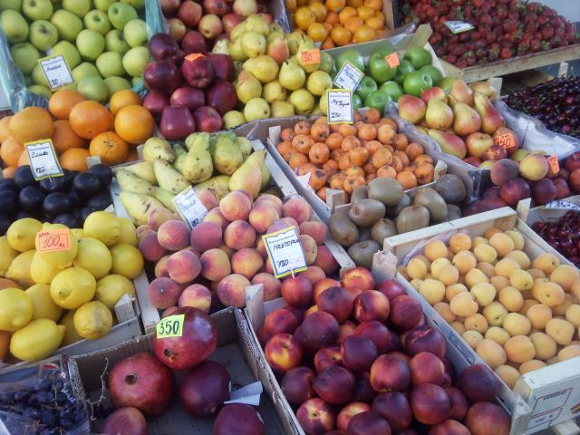

History
Our History
In 2021, as the parks were starting to open and people were starting to travel, we looked around and realized that we needed a healthy, organic option to all the foods around us. Healthy, organic foods will give us the energy we need to visit all the attractions that surround us.
We are physically located in Carlsbad, California; however, we have many food trucks that cover the coastal area from Los Angeles (1 hour, 30 minutes North) to San Diego (about 30 minutes South).
We sell fruits and produce directly from the farmers in the area, but we also use some national and international suppliers.
Carlsbad's History
Carlsbad's earliest residents were the Luiseño Indians who settled the coastal area. The Luiseño people were successful in living off the land using a number of natural resources to provide food and clothing. They had a close relationship with their natural environment. They used many of the native plants, harvesting many kinds of seeds, berries, nuts, fruits, and vegetables for a varied and nutritious diet. Visit Carlsbad Food Tours for more information about Carlsbad history.
Contact Us
Hours
Monday - Saturday: 8:30 am to 8:30 pm
Phone
Address
2907 State Street
Calsbad, California 92008
Social Media
 has Daily Locations of our Food Trucks
has Daily Locations of our Food Trucks
 has Opportunities for Partnerships
has Opportunities for Partnerships
 has Examples of our Fresh Drinks
has Examples of our Fresh Drinks